-
HOMESLICE. Episode 1: How to Make Vitamin Water®
February 14, 2013 by Brandon Joyce
Category: Uncategorized
-
Our Vegetables Segment, on Αyahuasca.
January 14, 2012 by Brandon Joyce
"No, that's all you."
This week, we'll be reviewing ayahuasca, the intense and emetic Amazonian hallucinogen long used among various South American communities, in their shamanic practices.
Αyahuasca was relatively unknown outside of these communities until the publications of freak/Harvard ethnobotanist Richard Evans Schultes. It was the Schultes lore that lured William Burroughs into the jungle, hoping to cure his opiate addiction, only to be greatly humbled by the encounter. He wrote about this— his "final fix"— in the epistolary Yage Letters, which make as good a brochure as any.
Read more…
Ayahuasca is now much more common among white people and transdimensional tourists, but I don't think you'll ever have to worry about it getting too crowded. The stuff does not permit much in the way of casualness. It's very all or nothing. Publicly, however, I would love to see it catch on as a club drug craze, being as I am, against casualness of all varieties. I could go for some yage parties where everybody was lying in the dark, puking and writhing from muscle spasms, convinced that a serpent-faced demigod was trying to "deplete" their soul. Sounds like a perfect Saturday.
"Do you feel anything?"
I got into it on my final day in Los Angeles, in decidedly non-shamanistic surroundings. Jonny was going to join in, but can barely hold down a glass of sangría and wisely decided otherwise. Another friend spent the day boiling down the ingredients into a manageable brew; filling their house with an unforgettable aroma that they described as being somewhere between garden mulch and hot dog juice. Αyahuasca is in fact two substances working together symbiotically, a vine and a shrub— and I imagine quite a shock for whichever jungle-dweller first discovered the combo. You have to eat them both. And I was prepared for the worst, but it went down pretty smoothly and I even double-dosed when I found out Jonny wasn't coming. I'm not very sensitive, I told my host.
I swallowed the first component in one gulp, waited about fifteen minutes, then ingested the second. Hope this works. The taste will never leave me. One person online described it as tasting digital and I completely agree without knowing why. Thinking I had about 30 minutes to whittle, I went into the bathroom for a warm shower, but looking down, the tiles were already getting a little fourth-dimensional. That was fast. Things were growing increasingly wavy and Alex Grey-y and it hadn't even been ten minutes. I made it back to a darkened room and lay down and already sensed a coterie of little personalities fluttering around me. Taunting me. Might get weird soon. Maybe shouldn't have taken the second helping. Too late now.
I'm one of those people for whom duh-duh drugs, drugs as pleasure, as stupefaction, never held much allure. I always want to learn something, or feel like I did. Not some big, trippy, transcendental super-truth. Just the kind of things you can learn from any sufficiently otherish experience. And all cynicism aside, drugs can gain you a kind of cognitive cosmopolitanism if you stay attentive enough; especially helldrugs like ayahuasca. Moods, perceptions, categories— I try to watch them bend, warp, come undone. Make notes. Doesn't always work, but every bit counts. This was what I was doing— or trying to do— in that darkened room, but it was coming on so strong. As so often happens, all the obvious daily dualisms— Night and Day, Pleasure and Pain, Life and Death, Here and There, Inside and Outside— were quickly getting problematic. Started to see the normally hidden workings of my personality on the world. Even my note-taking hit some bumps. I started thinking notes were a vanity. This is what you do, isn't it? You offer up your thoughts as a public commodity. Things soon turned pretty unpleasant.
I soon became aware of the personality of ayahuasca herself. A she. A really bitchy and malevolent presence that was telling me to prostrate myself before her. The Scorpion Queen. I really didn't like her, I got to say. The prostration was to take the form of a violent purge, traditionally the centerpiece of all ayahuasca experiences. Fine by me— I thought I had poisoned myself by this point anyway. I was sure. My sensorium was totally scrambled but by some miracle I made it back to the bathroom again and succumbed to the spasms with the door mercifully closed.
I was definitely hanging out on another plane of being which seemed truer and realer, despite my earlier disavows of super-truths. This is common. Αyahuasca convinces its victims that their everyday world is a sham, a production. It's hard to shake when you're in the middle of it, but I could go with the flow better since I have pretty fluid, pragmatic ideas of ontology anyw— Gag… it wanted to come out… Gag… I could hear thousands of annoying, little demons teasing me and telling me to bow before her; that I was no match. It seemed like an ego thing. Below me was an outline of something that vaguely resembled a toilet.
Then it came. And as soon as I puked, it felt like I jumped down the chute of some nightmare waterslide. I remember it all, vividly, but it's too much to disentangle in public discourse; too much of a splatter of my own personality.
When it disappeared, some hours later, it did so suddenly, like a morning fog burning off. All better. Another friend once told me that ayahuasca mythologies usually depict the human world of order as a fragile place floating amid a larger, rushing cosmos of somewhat horrific disorder. I can really see this, and do warn you of its considerable linger. Days later and I still taste its digitality in my throat. The sense of someone— a certain bitchy someone— hovering above me, or on some perpendicular plane, has yet to dispel. What is the status or meaning of this perpendicular plane? There's this great word: resipiscence. Some of the dictionaries just equate it to repentance, but I learned it as being "wisdom gained from severe experience," which I think explains the promise of ayahuasca: it is a brutal metaphysical hazing.
There are two possibilities: either no one has successfully translated the deeper cuts of drug wisdom into a common language, or it cannot be done— it can only be won by trials and by wonders; by a very personal and resipiscent transformation.
Categories: Ambiguities, Breakthroughs, Deaths, Recipes, Reviews | Tags: ayahuasca, digital aftertaste, resipiscence, richard evans schultes, william burroughs, yage
-
Guest Bloggeur Jerry P. Orridge on UK's Iceland Foods Ltd.
January 14, 2012 by Guest Blogger

Read more…
It was New Year's day in Hackney and everything was closed. The streets were dark and empty. Even the most stalwart employee of the 24 hour kebab shop, the little neon man who spent the best part of the year in the window display, maniacally trimming a large cone of meat, had the day off. I had been invited to dinner at a friend's flat but, having arrived an hour too early, rang the bell and found none of them home. It was cold, snowing steadily, and getting dark outside.
With 1£ in my pocket and nowhere to go, I walked around the block a few times. After leaving heavy breath marks on the storefront windows of two closed up-and-coming gastropubs, a closed used-clothing store, a closed design studio, and a closed empty car-parts shop, I made my way to the only open venue that night; an empty bus shelter. I sat down and took out my iphone. After a few pathetic attempts to connect to BTOPEN Zone's wireless network, my hand fell limp to the side, in exhaustion. No buses came. Light-headed and parched, fearing what would happen in the next hour and wondering if I would survive to ever eat another potluck again, I sat in quiet terror, staring at the pane of the bus shelter as slowly falling snow threatened to mute the entire city. Hopeless, and suddenly drained of any self-integrity, I leaned against a poster of Keira Knightley and drifted into a deep sleep.
Whether it was hours or days later, I couldn't remember, but large bright panels of fluorescent lightbulbs and a breeze of musty cold air stirred me awake. The smell of freezer-burn and the sound of Kelly Clarkson told me I was no longer outside. I opened my eyes, and shelves lined with rainbow-colored packaging stretched out before me. Beyond, the tubular dorsal fins of shopping carts circled distant aisles. Above me, a glowing banner exclaimed, "Welcome to Iceland" and that was when I knew I had finally crossed the diaphanous border into UK's largest indigenous frozen food item discount store.
Though the climes of Iceland were somewhat colder than those outdoors, I felt unnaturally warm; limber in fact. Drawn by strange and innate cravings for savings, I found myself in front of a glass-top freezer-case announcing 90p specials. Ungloving a hand, I pushed back the case's sliding doors and reached down into a thick white haze. Risking the temperatures at which water freezes, I grasped at the first thing I could find, and bravely pulled out Iceland's last box of Deep Dish Pizza with Doner. My very own Turkish delight. Grasping it to my heart, I watched in amazement as the red box, which seemed to radiate an unnatural heat, melted away the ice crust that had formed on my coat and around my vital organs. My pupils wide as lolipops, I wandered down Aisle 1, taking everything in.

Enthralled, I spied bags of small, hard, catydid-green granny-smith apples, a beautiful round can of steak and kidney pie big as a film reel, and each proudly announcing crimson-colored Tikki-flavored chicken products, stir-fried eggs, and haggis; enough stacked meals for one to last a bachelor a lifetime. Feeling an urge to splurge, I grabbed a cart and began to load up on products I'd only dreamed of, Ambrosia devon custard, Strawberry-flavored Angel Delight, which includes some real fruit flavorings, and Krüger's Impress Swirl, the zebra-striped breakfast and desert spread. Next, I found the soda aisle, where 3-liter bottles of my favorite Coca-Cola Big brand products were exactly half off.
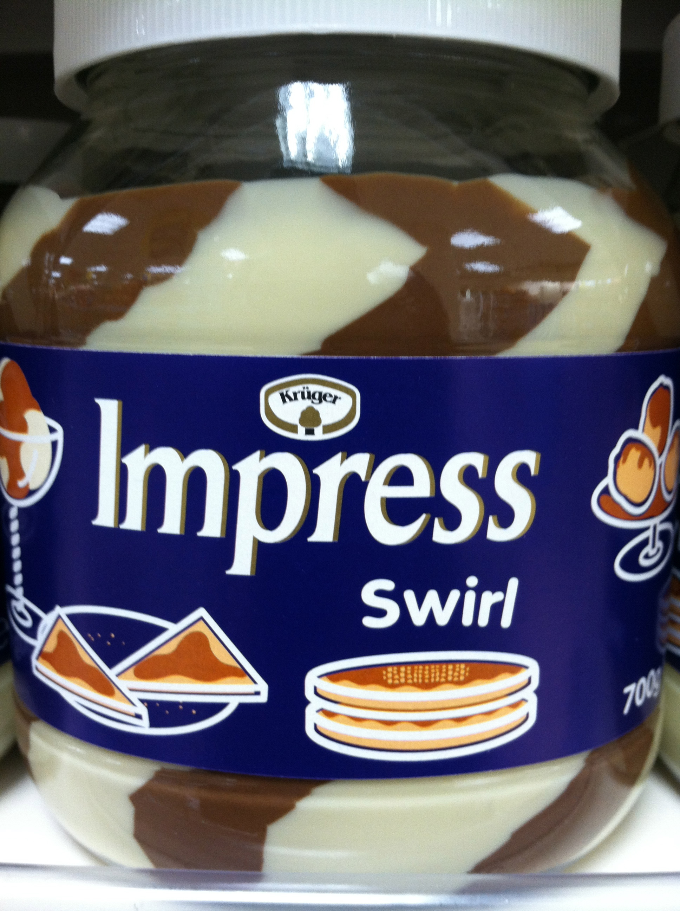
In the desert aisle, I stared down into the frozen case of ice cream and saw my very own frozen-food zoetrope. Dancing around a box of Toffee Caramel Fantastica, a line of beautiful Iceland rockettes, can-canning in their matching red and black shop uniforms. "Toffee Caramel Fantastica, shoop shoop shoop," they crooned into my erogenous zones. Stunned, I stumbled into the meat locker, where I encountered three silk-dressed courtiers and a singing jester singing the praises of food-like products.
I filled my cart to the brim. Drunk on savings, I steered it heavily towards the banner-trimmed register. The ice queen cashier, a supermarket Amy Winehouse with the soul of an angel, wore the signature red and black tux and had jet-black hair. His or her nametag said "Candy." Without counting its contents, Candy, the divining goddess of discount shopping announced the miraculously low total of my cart: "1 £ please."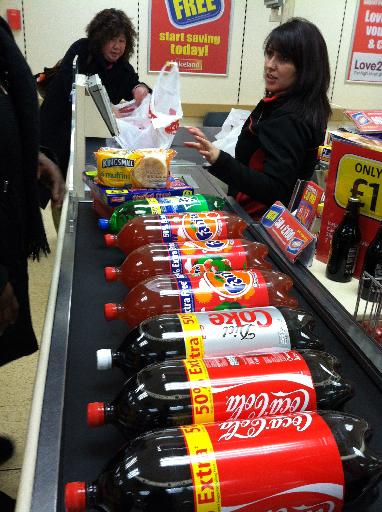
"I SAID one £ please!" The bus driver standing over me asked for the fare again, this time not so sweetly. Jolting upright, I opened my eyes and looked in horror at the chain-linked lot the bus was idling in. Iceland was gone. "Where am I?" I asked. "You're at the end of the line, sir, please pay your fare or get off here." "I thought I was at Iceland?" I cried, about to crack. "Can you take me back to Iceland?" The bus-driver laughed. "Iceland?" You mean the country? You'll need more than a city bus for that. I think you need to get yourself home boy." I stuck my hand in my pocket, but where my 1 £ had been, all I found was a packet of Strawberry-flavored Angel Delight.
Jerry P. Orridge
Category: Reviews | Tags: angel delight, candy, hackney, ice dream, iceland food ltd, impress swirl, jerry p. orridge, keira knightley, kelly clarkson, near death, Toffee Caramel Fantastica
-
Ubliquity™
December 23, 2011 by Brandon Joyce
Read more…
So I've been hashing out some more Blick design-ideas lately; a few hooks to bring more Blick buddies into the fan club. Certainly exciting times. First off, I want to introduce you to a friend of mine, Funnyface. He's the central protagonist in the new Blick Strips Comics Gang, along with the Surprise Guys and the Soda Fiends. Follow Funnyface and the Gang as they embark on strange adventures and discover new worlds and oblique metaphysical principles. I think every third issue of Blick Strips will address a serious social ill, such as divorce or teenage homelessness. Collect them all.
In addition, I've been noodling around with the Sensory Branding for all our Blick's locations. Just some last minute adjustments. All Two-Dimensional Decor is going to be dynamically generated by a secret algorithm (it involves odd numbers) in the Visual-Enviros Department down at the Brand Embassy. Every sample will be totally unique yet bereft of aura. Blick's will also switch up its Two-Dimensional Decor on a monthly basis, awarding the older samples to the Blick's customers who have contributed the most valuable and/or entertaining comments to our suggestion box. Audio-Enviro Sensory Branding will consist mostly of sound effects and midi classical music, whose tempo is controlled by the temperature outside of the eating establishment. A Blick's Jukebox is in the works and— to give you a hint— it's not a box. Please enjoy the visuals while your order is processed.
(Click on the pics for larger size)
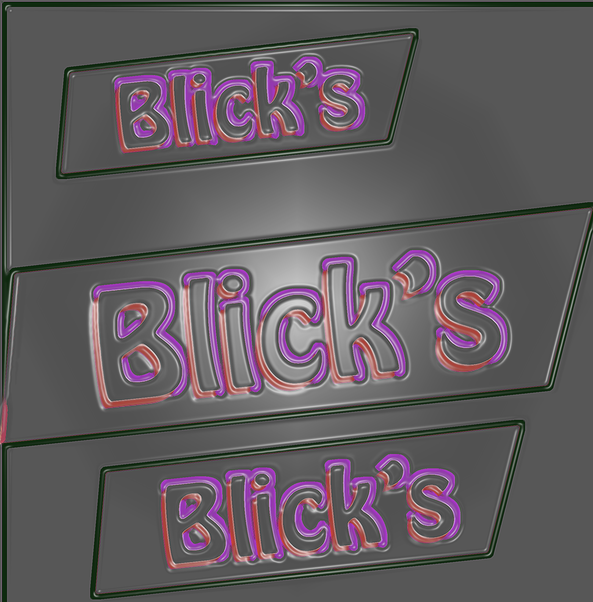
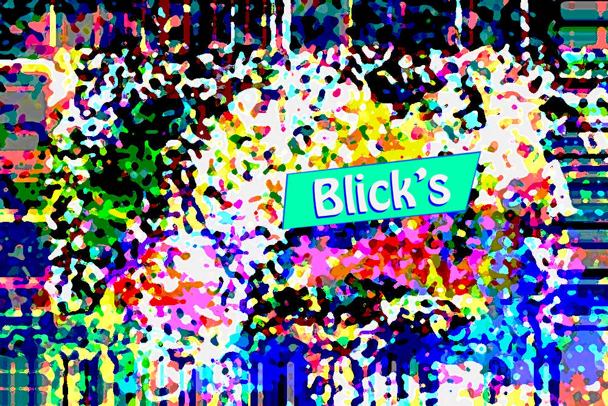
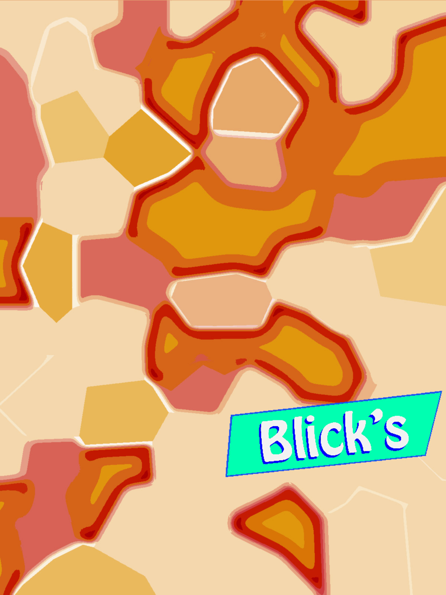
Most fast food chains design for conspicuity; in order to be easily espied from highways and distances. Not here. We operate with far more discretion than those other guys. As a matter of fact, there are already, as we speak, thousands of Blick's locations hidden all over the world. Underneath bridges. On the roofs of high schools. In "water towers" and abandoned train stations. The question you might have then is: how do I go about finding my nearest Blick's location?
Easily enough through our advertisements, or "advertisement regimes." However, nota bene: all Blick's advertisements are encrypted advertisements. This means you might have to look extra hard to know whether or not you are even looking at a Blick's advertisement. This encryption can take the form of either subliminal images (See Below) or, in the case of our coupons, as patterns embedded in the text of our nation's newspapers and magazines. The harder you look, the more you save. Blick's is interested in the higher mathematics of fast food marketing: some Blick's ads will actually be hidden in the ads of our competitors (See Below). We want to give our customers the feeling of having stepped into a new and secret world, where common laws have been turned upside down and nothing has been explained away. Retain mystery.
A Blick's Advertisement
Secret MessagesSee if you can spot our ad in this JITB masterpiece of ill-at-ease.
Category: Uncategorized | Tags: blick strips, Blick's, decor, encrypted advertisements, Funnyface, progress, secret worlds, soda fiends, surprise guys
-
From Necessity to Liberty: the 99¢ Only Store.
December 20, 2011 by Brandon Joyce
Read more…
Food Spiral is overjoyed to find itself once again in the landscape of esculent Los Angeles, California. Naturally, when you think of "food" and "Los Angeles," one thing universally comes to mind: the 99¢ Only Store. Not just any dollar store, though— and much less those "99¢ and up" chains that guarantee everything to be at least one dollar. It's the 99¢ Only Store, by name, that serves as a true beacon for bottom-shelf right-mindedness.
Everything a dollar. Misfit product on the verge of extinction. Single-use screwdrivers. Great design wonk. Democratic mingling with men shopping in flip-flops, punks with baskets full of root beer and gift wrapping, old women reading labels. And it's not only foodware: the place is dedicated to meeting Necessity of almost any kind, or more precisely, for converting Necessity into Liberty. I need nothing else. This cuts straight to everything that we at Food Spiral so warmly endorse.
What I want is to refuel mid-air and grocery-shop for twelve dollars and eighty-seven cents. What is it that we love so much about it? What do I mean by converting Necessity into Liberty? Okay, I think I can formulate this more earnestly: with this store, I can meet all my needs, surrender all my vanities, and finally focus on the things that matter to me most. That's it. Instead of eating an omelette elbow to elbow with a bunch of people wearing fedoras, I can pick up breakfast for ten and picnic at the top of Elysian Park, closer to God. The stock may be a bit unrefined, but all resource—all raw materials of a making-do— are inherently unrefined. They also have ties for one dollar.
This is hard for me, in some ways. When I see that gleam in the aisles, the coconut water, the Mexican spicy candies, the incredible bargains on all your household needs, it breaks my heart. I badly miss Los Angeles. Something infuses this city. And whatever that something is, I see it hanging in the air at the 99¢ Only Store. I think because, on all my walks throughout Los Angeles, I always managed to thread my path through this place at least once, and isn't this is how desire works— by a kind of needlework; a semiological web interweaving matter, event, and the human heart? I'll go stare at the plastic fly-swatters and pretend that I still live here, or take a few home, as souvenirs for a sunny Christmas spent at seventy degrees, eating Doritos for breakfast. You know what it is? I know I love a city when I am blind to its flaws.
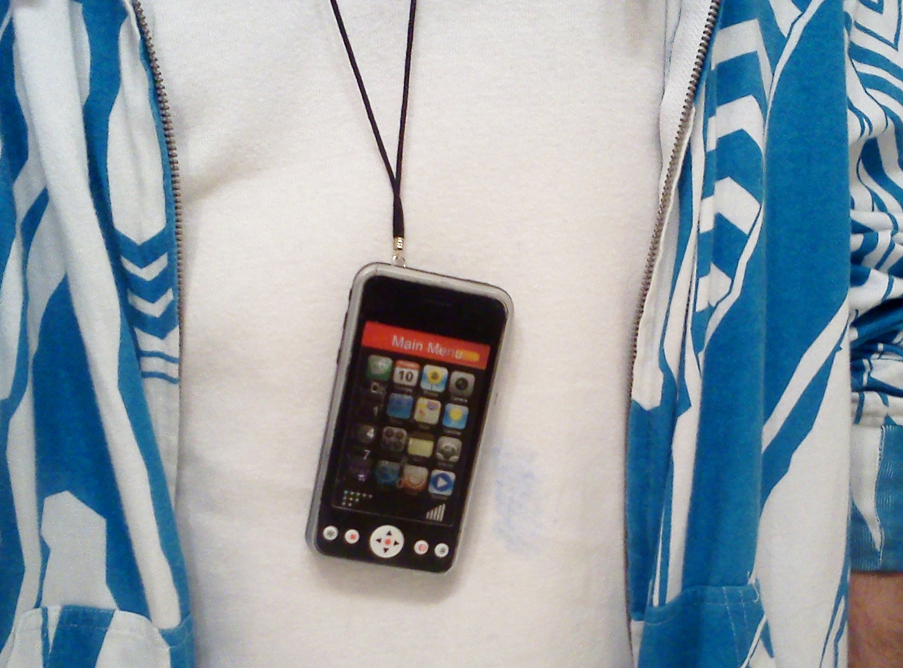
My faux-phone pendants made of parts from you-know-where.A perfect example: I find its diffuse paranoia charming. Jonny and I were strolling down Vermont and stopped into Chez Wendy for a light dollar-menu snack. As we approached the door, two policemen were yanking some nutcase out of the dining area with his head and face covered in blood— in gashes and sores… It looked like he had licked the underside of a lawnmower. Stepping inside, we look over and see an employee cleaning up a booth and smiling, and realize that it wasn't blood after all, but a raspberry topping that had been used as a weapon and then smeared all over the seat and table to make a statement. And what a statement it was: if it weren't for the handcuffs, I'd have signed the guy on as a guest blogger right then and there. Never did figure out what sparked the altercation, but I did hear a cop outside softly asking the guy "but you do understand how he might have considered that remark inflammatory, don't you?"
Okay, onto product review:
I have to admit that I was disappointed with Simpsons Fruit Snacks. The flavor, I found, was subdued rather than subtle, and the snacks were in the shape of fruit— apples, pineapples, grapes— rather than in the shape of simpsons; making the entire effort seemed phoned in, and lacking in the inspiration of the original television series. Then again, I did eat the entire box while writing this three sentence review; so perhaps there's a little of the old magic in those snack bags after all.
Vanitas
I think we all understand, on some level, that dental hygiene is inextricably bound up with pondering our own mortality. Teeth are mementi mori. We look in the mirror and smile and see visible pieces of our own skull. A sharp reminder of the soon-to-be remainder: our gleaming white skeletons. Teeth become brittle, pocked, decayed, rotten, and through some modest measures, we can defer their loss while we whiten and brighten, but eventually the fateful day will arrive. This is why I consider dental hygiene a part of the ars moriendo, especially for all you fruit-snackers and soda fiends out there. I remember the day I was first told that I had a cavity— well, I had twenty of them, actually. The dentist was giggling and offered me advice: "Let me guess, you like to drink soda. Yep. Nurse it for hours? Maybe out of a two liter?" Ouch. The man was good. I guess it makes sense that these glorious substances that quicken life— Coca-Cola, coffee, sugar, amphetamines— might also hasten death, or at least put a pretty weird fuzz on your enamel. That was the minute I realized that I was mortal, which sucks.
But I'm not going down easy. Instead I plan on stockpiling some serious anti-death prophylaxes from the 99¢ Only Store. Today I scored a singing toothbrush from Tooth Tunes, that plays "Walking on Sunshine" as I brush my little heart out. Batteries Included. And for the parents out there, it makes the perfect stocking stuffer for your chocoholic sons and daughters— just make sure to include a hand-written note explaining how toothbrushes are really for cleaning your skull.
Playboy has made a bold move by watering down its line of flavored lubes and marketing the results as a "libido enhancing drink." Gaggy on the whole, but this may only speak to its efficacy. The label reveals a rather rich proprietary blend, which we'll try to unpack… Okay, let's see: niacin and zinc I expect. Boron is a bit of a curveball, but I'm intrigued. Caffeine and ginseng, for stamina. The mildly nootropic GABA and Ashwagandha extract, for misdirection. Then a medley of herbal aphrodisiacs: Maca, Damiana, Cnidium, Eurycoma Longifolia, Muira Puama, and so on. After one, I felt nothing. To be fair, I was watching A Christmas Carol; so I'll try five tomorrow and see if I notice any warmth or sudden needs. Cancel all my appointments. This is the last thing I need.

A rare photozoan found along Sunset. It was on its way to buy cigarettes.
2 Comments
"Did you notice the vagina on your toothbrush? Nice touch."
"Interesting. I didn't. It brings up other questions."
Categories: Reviews, Uncategorized | Tags: 99¢ Only Store, fedora-harshing, handcuffs, heartbreak, liberty, Los Angeles, picture perfection, teeth and mortality, tooth tunes
-
Blick's: A brief esquisse of my ideal eating establishment
November 19, 2011 by Brandon Joyce
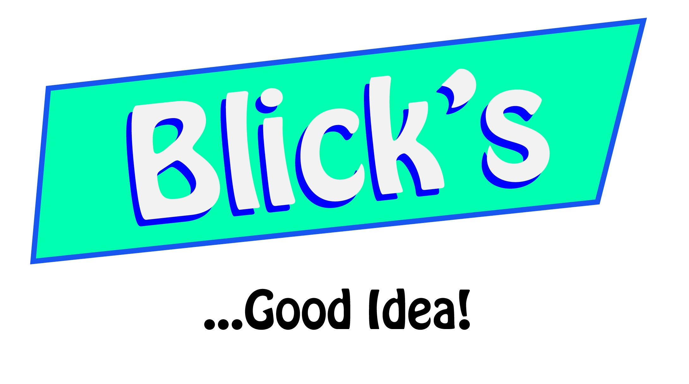
Read more…
Welcome to Blick's, a concrete imagining of my ultimate fantasy Fast-Foodery.
Blick's is a Fast Food Involution.
Blick's is the best of both worlds.
Still need a reason to eat at Blick's?
Here are ten of them…
Good Reason Number One: Blick's is America's first entirely hylomorphic dinner menu. What this means is that every entrée at Blick's is made from the very same substance— a supersubstance, Blickum— that is then pressed into different shapes, phases, and textures, and infused with a variety of natural and artificial flavorings.
There are square Blicks, round Blicks, iced Blicks, grilled Blick with a side of bitesize Blick-babies. Spicy Blicks. Slick Blicks. Invisi-Blicks. Bloomin' Blicks. Blicks for all occasions. And for all you weirdos out there, we also have special-diet Blicks available in a plexiglass-trunk: Veggie and Vegan Blicks. Lactard Blicks. Kosher Blicks. Liquid Blick. You name it.
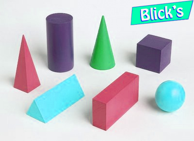
Basic Blick Entrée-FormsGood Reason Number Two: unlike those other guys, Blick's is an economically progressive fast food establishment. The Basic Blick Meal is only One Dollar and has the same nutritional value as the Middling-Blick, Über-Blick and Blick Papal Platter, which are only distinguishable by their higher complexity of shape, packaging, and taste sensation.
Good Reason Number Three: Not only are all Blick Meals the same nutritional content, each one is exactly 2000 calories and 100 percent of your Recommended Daily Intake (RDI), making it all the easier to calculate and control your daily diet. Great for both skinny people and fat people. Vitamin A? 100 percent. Protein? 100 percent. Molybdenum? 100 percent. Are you with us? …100 percent.
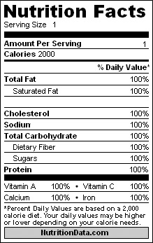
Good Reason Number Four: To help you better absorb all the goodness that blickdom has to offer, we recommend trying our magical-recipe condiment, Birthday Sauce. Not only is Birthday Sauce perfect and delicious with every Blick, it also contains a special digestive that helps your body break down and absorb Blickum in all its glorious supersubstantiality. Tell your friends how much you love Birthday Sauce, by becoming a Blick-Buddy on Facebook.
Good Reason Number Five: Sometimes the wrapping is the best part. Not only do Blick wrappers come in a panoply of beautiful forms and eye-catching colors, every wrapper, cup, and implement is inscribed with medium-to-extralarge passages from canonical literary and philosophical works. Sit, eat and think. Or, engage your unwilling dining partner with bitesize bits of Hölderlin, Rabelais, Spinoza, Adorno, Quevedo, Bakhtin, Li Po— and nearly any name in the world library.
Also: receive a free copy of your favorite Blick Classic with every tenth Blick meal.
Good Reason Number Six: We all hate waste. Luckily for us, every container at Blick's is 100 percent edible— not to mention light and delicious. So after you've finished absorbing your meals and literary supplements, slap some Birthday Sauce on that wrapper and go to town. Even our napkins and utensils are utterly munchable. Blick's… the sensible alternative.
Good Reason Number Seven: The playground at Blick's is for Adults Only. Children must dine in a glass-encased vestibule and talk about home renovation and groupons. Pets eat free.
Good Reason Number Eight: All people are welcome at Blick's— even people who hate other people. That's why we have an Auto-Blick food dispenser located outside of every Blick's location. With this special automated food-dispenser, you'll only have to interact with other human beings if you want to. Blick's… Have it your way.
For those who do love people, our dining room is open 24 hours day, 7 days a week, 365 days a year. Meet your fellow diners by eating at our Blick-Mixer Booths. Customers are randomly assigned by their ticket numbers, and paired up for dinner with a new friend, to better overcome the awkwardness and alienation of modern life. However, Blick's makes no guarantees about, and assumes no responsibility for, the accuracy, currency, content, or quality of third parties in the Blick-Mixer Booths. Terms and Conditions apply.
Good Reason Number Nine: How do we keep our prices so low? Simple: Total automation. All Blick Meals are created in a dazzling mechanical ballet, visible from both inside and outside the eating establishment. Watch the Blickum fly, squirt, and sizzle. You— the customer— are its only operator. You select your favorite geometries and taste sensations. You get to work the dials of the Soda Control Panel and finally mix down your flavors, sweetness, ice and carbonation with scientific precision. And what about those other guys? …Yeah, we didn't think so.
The only Blick's employees on hand are simply there to help guide discussion, propagate friendly yet appropriately chill vibrations, and assist in case of questions, maintenance, or criminal activity. If you need assistance, you can always spot one of our Big Time Operators by their distinctive sunglasses.
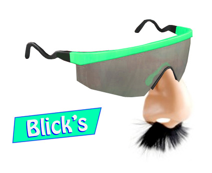
Good Reason Number Ten: Every Blick's location is created out of a modular architectural vocabulary of clashing themes and forms— so no two Blick's are ever the same, or ever present a unified architectural expression. We stand by the bracing design ethos of "Confused Architecture," first pioneered by the forward-thinkers down at Jack-in-the-Box™.
Blick's… Life is too short to understand where you are.
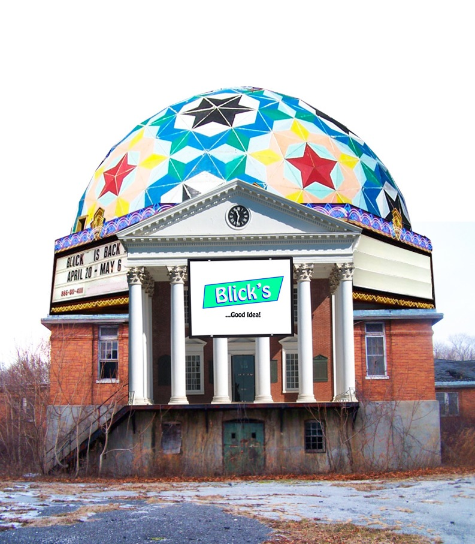
A new Blick's location
Need even more Good Ideas from the people at Blick's… Stay Tuned.
Brandon Avery Joyce, CEO.
1 Comment
"At 5-foot-7 and 125 pounds, Mattson looks like a meal-skipper, and he is one. Instead of having breakfast or lunch, he takes all his food over a period of a few hours each evening—a bowl of steamed cabbage, a bit of salmon, maybe some yogurt. It's not unlike the regime that appears to protect his lab animals from cancer, stroke, and neurodegenerative disease. 'Why do we eat three meals a day?' he asks me over the phone, not waiting for an answer. 'From my research, it's more like a social thing than something with a basis in our biology.'"
Category: Uncategorized | Tags: Bakhtin, Birthday Sauce, Blick's, confused architecture, food geometry, food-dispensers, hylomorphic cuisine, molybdenum, overcoming challenges, slippery slopes, Soda Control Panel, total automation, utopian fast food, visionary
-
Taurine Dreams: On Rumba, the overly-orange energy elixir.
November 14, 2011 by Brandon Joyce
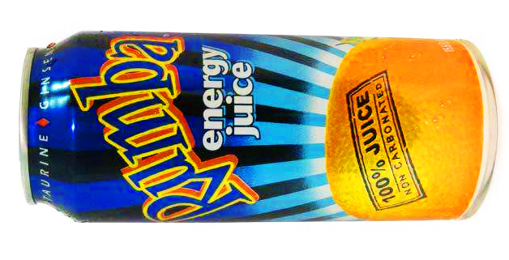
It's fitting that the first review on Food Spiral would be an energy beverage. Where better than the Food Spiral to transgress the boundaries between Food and Drug? Or, to explore the difference between mere nutrition and true ecstasis? Aren't we blessed to live in a world where we can purchase a magical elixir for two dollars, drink it with friends in the grit behind a shopping center, by a loading dock and a buzzing highway, and spend the rest of the afternoon wrestling cardboard boxes? Equally, we can read a Great Work, follow it with a canister of radioactive energy fluid, and find ourselves still awake and frothing thirty hours later, on a grassy patch somewhere near our house, in the grips of an Absolute.
Read more…
This is, after all, what we should mean by the Absolute. These moments of totalization; these seizures of meaning, while walking under a highway overpass. Energy drinks want this to happen for you. They are Muse-inducing. We should feed them to animals.
But there are many energy drinks; many drinks and many differences. The basic combo in any energy beverage is of course taurine and caffeine. But then there are also vitamins, sugars, sugar substitutes, other xanthines, taste, price, color, aroma, acidity… This is all very much a science, to be exploited.
Red Bull for instance— the over-hyped, over-priced energy beverage of the boardroom— should be shunned whenever possible. It was Red Bull that eclipsed my very first, and most beloved energy beverage, Red Devil, a pure and powerful substance discovered in my youth. When a friend of mine showed me its can, with its Marvel-inspired graphic of a devil with spiraling yellow eyes, that was the day everything changed. I can still close my eyes and recall its vaguely vanilla, battery acid aroma… I will never forgive Red Bull for taking her away from me.
Others have, in turn, taken her place. Most notable was the Seven-Eleven energy fountain drink, Wild Stallion. In my early days in Philadelphia, we bought the stuff by the barrel— 99 cent refills on the 2-liter Double Gulp— and spent the days mastering Bill-and-Ted temporal projection and "clutching our kidneys in sublime regret."
I've sipped and enjoyed Rock Star, NOS, Vitamin Water Energy Drinks, but recently fallen for an energy drink that costs me a negligible 70 cents at my local Big Lots Bargain Safari. It's called Rumba. And with those kind of prices, I can finally skip breakfast, lunch, and dinner. Rumba is stuffed to the lid with all the vitamins you need for "becoming astral," in the words of Maurice Blanchot. It's only fair to warn you though: go a little easy on the Vitamin B. I once slammed four whole Rumboids— equal to eight times my daily allowance of niacin— and got an orange rash from sitting in the afternoon Sun… A small price to pay for astrality.
As Food Spiral progresses, or regresses, much space will be devoted to Caffeine and its Kind, and for good reason. It should have a solid place in our founding myths. And when I say "our," I mean we moderns. We, beneficiaries of this miraculous and inexplicable Good. I can only hope to pen a founding myth— the Xanthiad— worthy of her. And every time I pop the top on a delicious and citrus Rumba energon cube, I beseech her.
Brandon Joyce
1 Comment
"Such determinations of time and space as 'infinity,' 'eternity,' 'boundlessness,' which are so abundant in our emotional-volitional, participative thinking in lived life, do not function at all as purely theoretical concepts in philosophy, in religion, in art, and in actual usage." —Bakhtin
Categories: Breakthroughs, Reviews | Tags: apophany, big lots, caffeine justice, energy beverages, red devil, rumba, seven eleven, the absolute, what are you waiting for?, wild stallion, xanthines
-
Welcome to the Food Spiral Network.
November 6, 2011 by Brandon Joyce
With all the different bars and fabulous restaurants to be found all over the world, wouldn't it be great if you could put them all in one place and burn them to the ground? Food Spiral is a food blog for the rest of us, or at least a food blog for whoever's left: for the daredevils, the freeze-dried space-food aficionados, the human goats, the bricoleurs, the sturdy, the creepers, the trick-or-treaters, the sidewalk bistro griefers, the soda fiends, the gas station gourmands— for indeed everybody committed to a new Food Transcendence. We know where you live. Taste the Rainbow.
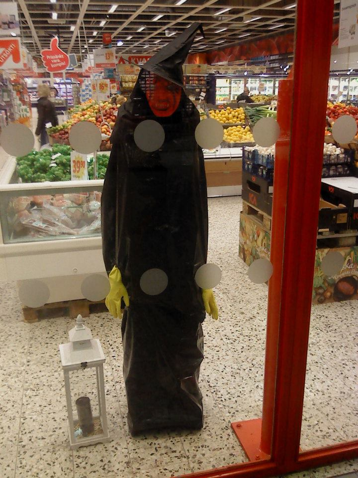
Food Spiral encourages an exploratory connoisseurship freed of all the annoyances and aristocratic encodings of most culinary discourse. In our weekly reviews, Food Spiral will entice our readers with exciting new products, travesties, recipes, hate mail, hot tips, and recommendations on some of the more interesting purveyors of low-quality food items. By way of an induced hysterics, we hope to also overcome some of our own inconsistencies and limitations, and open up a path that might lead us beyond both fodder and haute cuisine.

Categories: Ambiguities, Breakthroughs, Deaths, Items, Recipes, Reviews, Uncategorized
1 Comment
memeloose — December 23, 2011
"My nuclear family and I have been ambienting Blick's nondescript locations for years. Best food-like substances on this land-mass!"